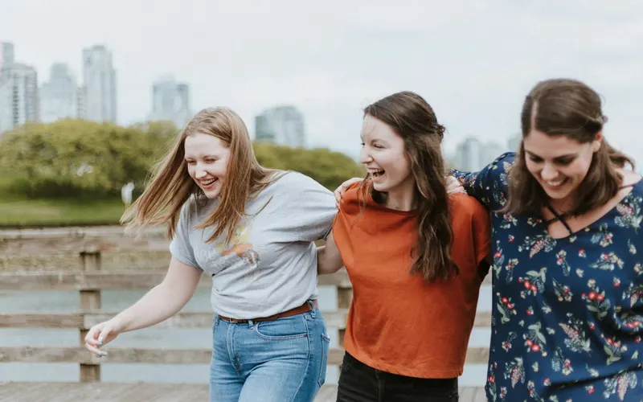
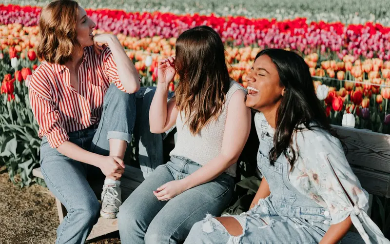
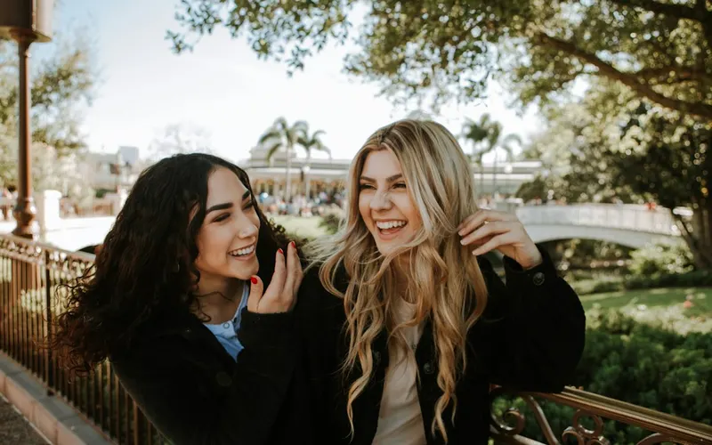

Formato
6 sesiones de 90 a 120 minutos, una por semana, en grupo reducido. Cuaderno de trabajo incluido.
Programa de acompañamiento
Seis encuentros semanales para pasar de sobrevivir a volver a vivir, en un grupo reducido y con un cuaderno de trabajo propio.

Crear confianza, establecer acuerdos y reconocer el momento vital de cada participante.

Identificar necesidades y practicar recursos cotidianos de autocuidado.

Valores, fortalezas, intereses y aspectos de la identidad que se quieren recuperar o desarrollar.

Límites, comunicación, vínculos saludables y creación de una red de apoyo.
Tiempo personal, nuevos hábitos, objetivos e ilusiones que no dependan de otras personas.

Definir un plan personal de 90 días y cerrar el proceso con compromisos concretos.

6 sesiones de 90 a 120 minutos, una por semana, en grupo reducido. Cuaderno de trabajo incluido.
Fechas, lugar y precio: por anunciar. Déjanos tu contacto y te avisamos antes que a nadie.
Qué es y qué no es. BE YOU ofrece acompañamiento, educación emocional y apoyo mutuo. No es psicoterapia ni promete resultados clínicos. Si estás pasando por un momento de mucho sufrimiento, violencia o trauma, te orientaremos hacia profesionales cualificados.